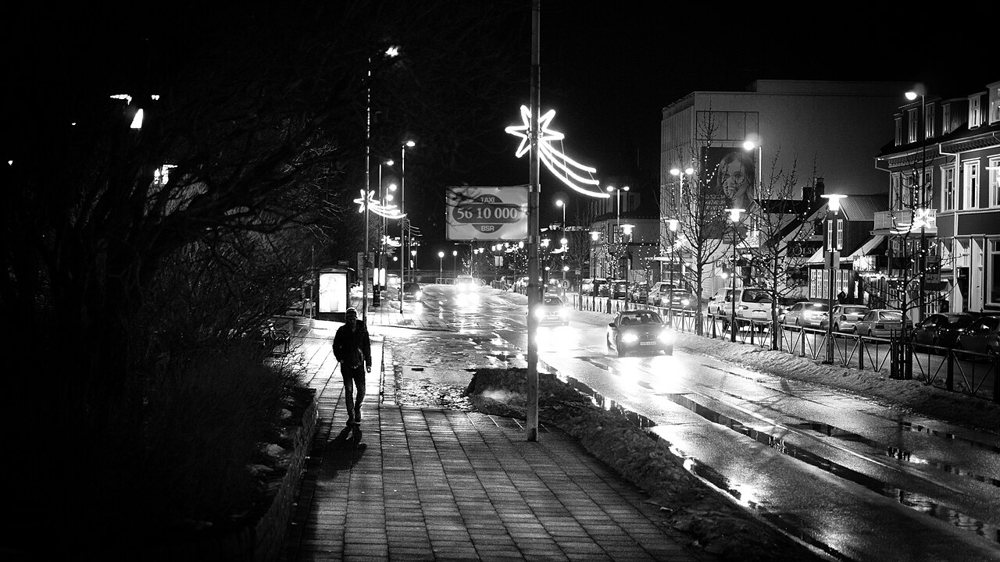

SENAI · Firjan · Projeto SEEDUC — 200 horas
Bem-vindo ao material de estudo do curso Fotografia Digital com Smartphone. Aqui você encontra toda a base teórica que vemos em sala — para revisar, aprofundar e praticar em casa, no seu ritmo. Do clique ao portfólio profissional.

Sobre o curso
A primeira fotografia da história foi feita em 1826. Quase 200 anos depois, você carrega no bolso uma câmera mais poderosa do que tudo que existia no século passado. Este curso te dá as bases conceituais e técnicas para extrair o melhor dela — seja seu aparelho avançado, intermediário ou básico.
A proposta é desenvolver capacidades para capturar e criar imagens fotográficas com smartphone, realizar ajustes, editar e construir um portfólio digital pronto para o mercado. Quanto mais elementos técnicos e artísticos você dominar, mais interesse — e renda — suas fotos vão gerar.
Cada módulo reúne toda a teoria que vemos em aula, com diagramas, imagens, exemplos de grandes fotógrafos e vídeos. Use o índice lateral de cada página para navegar pelos tópicos, volte sempre que precisar e pratique no seu próprio celular. Estudar em casa é parte do aprendizado.
A trilha completa
Do conceito ao projeto final. Cada etapa constrói sobre a anterior — siga na ordem na primeira vez e depois volte livremente ao que precisar revisar.
História da arte e da fotografia, fisiologia do olhar, partes da câmera, o triângulo da exposição, enquadramentos, regra dos terços e composição.
Estudar módulo →Luz natural e artificial, luz dura e suave, contraste, esquemas de iluminação, equipamentos caseiros e fotografia noturna.
Estudar módulo →Brilho, contraste, saturação e corte; filtros e textos; formatos, resolução e tamanho ideais para cada rede social.
Estudar módulo →Mercado e estilo, modelo de negócio (Canvas e SWOT), precificação, atendimento, portfólio, banco de imagens e como ser MEI.
Estudar módulo →Da pesquisa do tema ao mood board, produção, seleção e tratamento das imagens, até a apresentação do produto final e do portfólio.
Estudar módulo →Conheça grandes fotógrafos como Sebastião Salgado, Cartier-Bresson, Annie Leibovitz e os brasileiros que marcaram a história.
Conhecer os mestres →Competência geral
Entender ISO, abertura e velocidade e usar o modo manual do celular para fotografar qualquer cena.
Aplicar regra dos terços, planos, simetria e perspectiva para dar força e significado à imagem.
Ler e modular a luz natural e artificial, criando profundidade, volume e clima nas fotos.
Tratar brilho, contraste e cor, aplicar filtros e exportar no formato certo para cada destino.
Precificar, atender clientes, montar portfólio e estruturar a fotografia como fonte de renda.
Conceber, produzir e apresentar um ensaio fotográfico autoral do início ao fim.
Seu instrutor
Este material foi organizado para acompanhar nossas aulas e ser o seu ponto de apoio em casa.
A ideia é simples: tudo o que conversamos em sala fica registrado aqui, de forma visual e navegável, para você revisar quantas vezes quiser. Fotografia se aprende praticando — use o site como guia e o celular como laboratório. Bons cliques, e nos vemos no mercado de trabalho!
Sua jornada começa no Módulo 1, com a história e os fundamentos que sustentam toda boa fotografia.